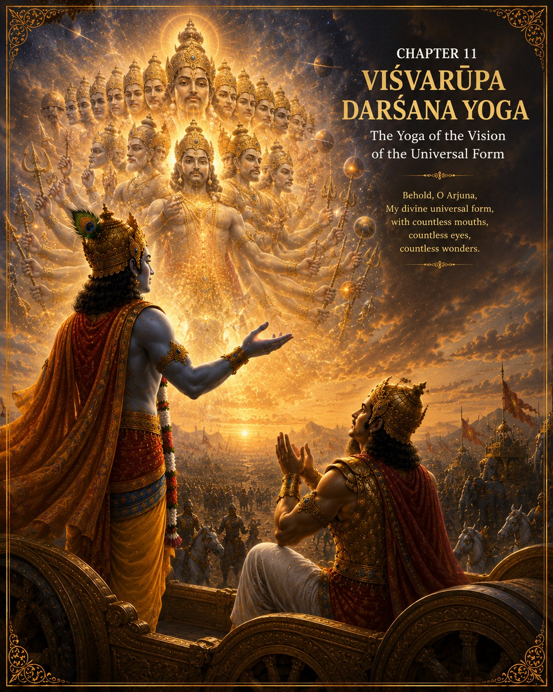

The GITA Project › Week 11 · Chapter 11

Week 11 · Chapter 11 — Viśhwarūpa Darśhana Yoga: The Yoga of the Vision of the Universal Form
Student Theme — When Reality Is Larger Than Our View
Chapter SummaryWhat Happens in Chapter Eleven
Chapter Eleven records one of the most awe-inspiring moments in the Bhagavad Gita. At Arjuna's request, Lord Shri Krishna grants him divine vision to behold His universal form (Viśhwarūpa). Arjuna witnesses the Lord as the source, sustainer, and dissolver of the entire universe. Countless beings, celestial forms, and the unfolding of time itself are seen within the Supreme Lord. Filled with wonder, humility, and reverence, Arjuna realizes that the outcome of the battle is already known to the Lord. Lord Shri Krishna teaches that Arjuna's role is to become an instrument of Dharma by faithfully performing his duty. The chapter concludes with the Lord returning to His gentle human form and emphasizing devotion as the means to truly know Him.
How the great teachers illuminate this chapter — each from their own lineage of wisdom.
Explains that the universal form reveals the limitless majesty of the Supreme Lord while helping the seeker rise beyond narrow identification with the individual body and ego. The vision inspires detachment and discrimination by revealing the transient nature of worldly existence and the eternal reality that underlies it.
Emphasizes the Lord's immeasurable greatness together with His boundless compassion. The universal form inspires devotion, surrender, and reverence. Arjuna's response demonstrates that genuine love for the Lord naturally deepens when His infinite glory is recognized, while His personal relationship with the devotee remains full of grace.
Teaches that the Viśhwarūpa confirms the Supreme Lord's absolute sovereignty over all creation. Every being depends upon Him, and His will governs the unfolding of cosmic events. The individual soul fulfills its highest purpose by serving the Lord with humility, faith, and obedience to Dharma.
Presents this chapter as an invitation to expand one's perspective. Human concerns often appear overwhelming until viewed within the vastness of the Divine plan. Recognizing ourselves as instruments of a higher purpose develops humility, courage, and freedom from excessive attachment to personal success or failure.
Highlights Arjuna's emotional transformation. Awe replaces doubt, reverence replaces familiarity, and surrender replaces hesitation. The vision teaches that trust in the Lord grows when we recognize His limitless wisdom and His loving guidance through every circumstance of life.
Common Threads of Dharma All five teachers affirm that the universal form reveals the Supreme Lord's infinite nature and the limited perspective of the individual. Humility, devotion, surrender, and faithful performance of one's duty naturally arise when we recognize ourselves as participants in a Divine purpose greater than ourselves. Dharma is fulfilled by becoming willing instruments of the Lord.
…our perspective changes so completely that we never see the world the same way again.
Some moments divide our lives into before and after. Meeting someone who changes your life. Witnessing the birth of a child. Standing beneath a sky filled with countless stars. Experiencing an act of extraordinary courage. Seeing the Earth from space. These experiences remind us how small we are, yet how deeply connected we are to something far greater. Chapter Eleven is one of those moments. It is the turning point of Arjuna's journey. He no longer wants to merely hear about the Divine — he longs to experience the Divine.
One question — Have you ever had a moment so vast that your everyday worries suddenly felt smaller?
A moment you may know — Looking up at a night sky full of stars, or a photograph of Earth from space, and feeling both tiny and strangely connected to everything.
This chapter's promise — You will see that recognizing something far greater than ourselves does not shrink us; it gives us humility, and humility gives our confidence a firmer place to stand.
A request born from devotion
Arjuna has listened with complete attention. He has heard Lord Shri Krishna reveal His Divine nature. He has learned that all greatness reflects the Divine, and his faith has deepened. Yet one heartfelt desire remains. He asks, “Lord, if You believe I am ready, please reveal Your Universal Form so that I may truly understand.” This is not a request born from curiosity. It is born from devotion.
Lord Shri Krishna lovingly grants Arjuna divine vision. What Arjuna sees cannot be understood through ordinary eyes. He beholds the entire universe united within the limitless form of the Divine — countless worlds, countless beings, infinite beauty, infinite power, infinite compassion, infinite majesty. Everything exists within the One.
Understanding the SituationHave you ever looked at a photograph of the Earth taken from space? From that distance, national borders disappear. Differences seem smaller. Humanity appears united. The perspective changes everything.
Chapter Eleven offers an even greater transformation of perspective. Lord Shri Krishna invites Arjuna to see existence not from the viewpoint of one individual life, but from the perspective of the Divine. Suddenly, Arjuna realizes that he is part of something infinitely larger than himself. His fears become smaller. His ego begins to dissolve. His understanding expands. Sometimes the greatest transformation in life happens not because our circumstances change — but because our perspective changes.
The Court of Dharma™Six steps into the vision of the whole
- One Situation
- Arjuna asks Lord Shri Krishna to reveal His Universal Form.
- One Dilemma
- How do we respond when we begin to recognize the true greatness of the Divine and our own place within creation?
- One Question
- How does seeing the bigger picture change the way I live my life?
- One Conversation
- Lord Shri Krishna grants Arjuna divine vision. Arjuna beholds a form beyond human imagination — he sees creation, preservation, transformation, and time itself. He realizes that the Divine is not limited by any one form, place, or moment. At first Arjuna is filled with awe, then humility, then reverence, and finally he bows with gratitude and devotion, recognizing that the friend beside him is also the Supreme Reality sustaining all existence.
- One Virtue
- Humility — which naturally arises when we recognize something greater than ourselves. It does not diminish confidence; it gives confidence its proper foundation.
- One Life Practice
- Spend ten quiet minutes appreciating the beauty of creation, and let yourself feel wonder without needing to explain it. (Full practice below.)
Two verses on awe and devotion
Verse 1 — I am mighty Time · 11.32
कालोऽस्मि लोकक्षयकृत्प्रवृद्धो लोकान्समाहर्तुमिह प्रवृत्त: ।
ऋतेऽपि त्वां न भविष्यन्ति सर्वे येऽवस्थिता: प्रत्यनीकेषु योधा: ॥
kālo 'smi loka-kṣhaya-kṛit pravṛiddho lokān samāhartum iha pravṛittaḥ
ṛite 'pi tvāṁ na bhaviṣhyanti sarve ye 'vasthitāḥ pratyanīkeṣhu yodhāḥ
“Time am I, laying desolate the world, made manifest on earth to slay mankind!”
— Bhagavad Gita 11.32 · trans. Annie Besant (1922), public domain — via Wikisource
What this does NOT mean — read this carefully
scriptural review This is one of the most awe-filled lines in world literature, and it is easy to misread. Krishna is not glorifying violence or celebrating destruction. He is revealing something quieter and larger: that Time — impermanence itself — moves through all things, and that nothing in the material world lasts forever. Every star, every empire, every living being arises and eventually passes. The verse asks us to stand in awe before that vastness, and to hold our short lives with humility and care — never to treat any person as something to be “destroyed.” The proper response to impermanence is not fear or aggression, but reverence, gratitude, and the resolve to use our brief time well.
Words to Remember — kāla time · loka world · kṣhaya ending, dissolution · samāhartum to gather back / draw in.
In plain words. Arjuna sees that time carries everything forward — that all things in the world are passing, held within a reality far greater than any single life. This is not meant to frighten him but to free him: his task was never to control the whole universe, only to do his own duty faithfully within it.
Reflect: When you remember that time is always moving, does it make you want to waste your days — or to use them well?
Verse 2 — The devotee free from malice · 11.55
मत्कर्मकृन्मत्परमो मद्भक्त: सङ्गवर्जित: ।
निर्वैर: सर्वभूतेषु य: स मामेति पाण्डव ॥
mat-karma-kṛin mat-paramo mad-bhaktaḥ saṅga-varjitaḥ
nirvairaḥ sarva-bhūteṣhu yaḥ sa mām eti pāṇḍava
“He who doeth actions for Me, whose supreme good I am, My devotee, freed from attachment, without hatred of any being, he cometh unto Me, O Pandava.”
— Bhagavad Gita 11.55 · trans. Annie Besant (1922), public domain — via Wikisource
Words to Remember — mat-karma work done for the Divine · bhakta devotee · saṅga-varjita free from attachment · nirvaira without malice toward anyone.
In plain words. After the overwhelming vision, Krishna ends with something gentle and practical. The point of seeing the vastness of reality is not to feel crushed by it, but to live simply and lovingly within it: do your work sincerely, hold your results lightly, and carry no malice toward any being. It is striking that a chapter about cosmic power closes on kindness.
Reflect: What would change this week if you tried to carry “no malice toward anyone,” even people who annoy you?
Chapter Eleven is one of the most extraordinary chapters in all of world literature. Lord Shri Krishna reveals His Universal Form to Arjuna — not to overwhelm him, but to expand his understanding. Arjuna learns that the Divine is limitless. Nothing exists outside the Divine; everything arises, exists, and ultimately finds its fulfillment in Him.
This vision also reminds Arjuna that history unfolds according to a much larger purpose than any individual can fully comprehend. His responsibility is not to control the entire universe. His responsibility is to faithfully perform his own Dharma. The Bhagavad Gita teaches that when we recognize the greatness of the Divine, our own responsibilities become clearer, not smaller.
Dharma LensWhen the “bigger picture” collides with a real duty
Seeing the vastness of things can be freeing — but it can also be used, honestly or dishonestly, to decide what matters. That raises a real tension.
A situation without an obvious answer
Meera has spent months preparing for a competition that means a great deal to her family and to her own hopes. The night before, a close friend is going through a private crisis and quietly asks her to stay. Part of Meera thinks, “In the big picture, one competition is nothing — a friend matters more.” Another part knows that people worked hard for her, that she made a commitment, and that “it's all small anyway” can become an excuse to drop any responsibility she finds inconvenient. Does a larger perspective mean the competition no longer matters — or is faithfully doing the duty in front of her its own kind of greatness?
Chapter Eleven honors both the vastness that shrinks our ego and Arjuna's charge to perform his own Dharma. So which is humility here — stepping back, or showing up?
The chapter itself refuses a lazy answer. The vision does not tell Arjuna that nothing matters; it tells him that his part matters within something larger than himself. Seeing the bigger picture is meant to dissolve pride and fear, not responsibility. A thoughtful person might weigh Meera's night in more than one defensible way — the honest test is whether “it's all small anyway” is real wisdom in the moment, or just a comfortable way to avoid a hard duty.
Character in Practice · HumilityWhat it means. Humility naturally arises when we recognize something greater than ourselves. It reminds us that our talents are gifts, our successes are opportunities to serve, and our lives are part of a much larger story.
What it does not mean. Thinking poorly of yourself, or pretending you have nothing to offer. Humility does not diminish confidence — it gives confidence its proper foundation.
In daily life. Continuing to strive for excellence while remembering that wisdom, compassion, and gratitude are greater achievements than recognition or fame.
How it's misread. As timidity. A humble person can be bold; they simply know their gifts were received and are meant to be used in service.
Recognizing progress — without self-righteousness. Lord Shri Krishna teaches Arjuna that true greatness and genuine humility always walk together. You notice progress when awe comes more easily and comparison comes less.
The scroll through everyone else's highlights that quietly convinces you your own life is too small. The trophy that felt like everything until, weeks later, it felt like almost nothing. The night sky you rarely look up at. Chapter Eleven gently suggests: step outside your own frame now and then. When you glimpse how vast and connected reality is, your fears shrink, your gratitude grows, and — strangely — your own part in the story becomes clearer, not less important.
Leadership LabImagine standing before a giant puzzle with thousands of pieces. You are holding only one piece. By itself, it seems insignificant. Yet without that one piece, the picture remains incomplete. Life is much the same. Each person has unique gifts, unique responsibilities, and unique opportunities to contribute.
Lord Shri Krishna reminds Arjuna that every individual has an important role within a much greater purpose. Great leaders do not ask, “How important am I?” They ask, “How can I faithfully contribute the part entrusted to me?” Purpose grows when we stop comparing ourselves with others and begin serving where Dharma has placed us.
Discussion Circle- ObserveWhy does Arjuna ask to see the Universal Form? The chapter says his request comes from devotion, not curiosity — what is the difference?
- InterpretWhen Krishna says “I am mighty Time” (11.32), what do you think He wants Arjuna to feel — and what would it be a mistake to feel?
- ConnectDescribe a moment when your perspective suddenly widened — a night sky, a loss, a photo, a piece of news — and how it changed you, even briefly.
- Ethical tensionReturn to Meera. When is “in the big picture this is small” real wisdom, and when is it an excuse to skip a duty?
- ApplyVerse 11.55 asks for “no malice toward any being.” Name one person this could change how you treat this week.
- ChallengeSomeone says, “If we're this tiny and everything passes, then nothing we do really matters.” Respond using this chapter — fairly to both the vastness and the responsibility.
Purpose: to experience awe directly and let it deepen humility and gratitude. Time: 10 quiet minutes, once or more this week (15–20 min with the writing) · Format: individual, reflections shared voluntarily in class · Materials: a journal or notebook; a place to sit outdoors or by a window.
- Choose a place where you can appreciate the beauty of creation — beneath the night sky, in a park, beside a tree, watching the sunrise, or listening to birds.
- Leave your phone behind, or put it fully away. Simply observe, without recording or explaining anything.
- Sit for about ten minutes. Let yourself notice how large the world is and how connected you are to it.
- Afterward, write in your journal: What makes me feel awe? What reminds me that life is bigger than myself? How does this experience inspire gratitude?
- Allow yourself to experience wonder without needing to explain it. Bring one line from your journal to share, if you wish.
The One Life Practice · Wonder Without Words
Once this week, spend ten quiet minutes somewhere you can feel the beauty and scale of creation — and simply let yourself be amazed, with no need to capture, post, or justify it.
Notice how awe naturally softens pride and worry. When we remember how vast reality is, our own part in it becomes something to steward with gratitude, not to inflate or defend.
A gentle note on well-being. Verse 11.32 speaks of time and impermanence — the truth that everything in the world passes. For some students, thinking about endings, death, or how small we are can stir real unease rather than calm awe. That is a normal and thoughtful response. If these reflections feel heavy, set them down and talk with a trusted adult — a parent, teacher, or counselor. The chapter's aim is not to frighten but to comfort: we are small, yes, and also deeply held within something vast and caring. You never have to sit with a hard feeling alone.
1. Personal. Think about a time when your perspective changed. Perhaps you learned something that transformed your understanding, met someone whose life inspired you, or realized a problem was much smaller than you first believed. How did that new perspective change your actions?
2. Dharma. Where in your life could remembering the “bigger picture” help you — without becoming an excuse to avoid a real responsibility?
3. Character. What is one talent or advantage you have that you could start seeing as a gift meant for service, rather than only for yourself?
4. Action commitment. One place I will practice “no malice toward any being” (11.55) this week, and how:
5. A private question (you never have to share this): If Lord Shri Krishna were standing beside me today, what might He help me see that I have been overlooking because I have been focused only on myself?
For a parent or guardian — please listen more than you speak. This is a conversation, not a quiz.
1. Was there a moment in your life when your whole perspective changed — after which you never saw things the same way?
2. What in the world still fills you with wonder or awe?
3. When life felt overwhelming, what helped you remember that you were part of something larger?
Teacher Note — Chapter 11
Objective: students can explain that the vision of the Universal Form reveals the Divine as limitless, and can describe humility (through awe) as recognizing something greater than ourselves without losing confidence or responsibility.
Sensitive-topic alert: verse 11.32 (“I am mighty Time… the source of destruction”) must be framed as awe before impermanence, never as glorifying destruction or violence. Use the callout and the well-being note; be ready for students for whom impermanence or death stirs anxiety, and point them toward a trusted adult. scriptural review
Likely question: “If everything passes and we're so small, does anything we do matter?” → The vision shrinks ego and fear, not responsibility; Arjuna's charge is to faithfully do his part within the whole.
Misconception to avoid: reading 11.32 as a license for aggression, or reading “the bigger picture” as an excuse to abandon duties. Distinguish awe from fatalism, and humility from passivity.
Transition to Chapter 12: having witnessed the Universal Form, Arjuna's heart is filled with devotion. Next he asks a simple, profound question — what kind of devotee is most pleasing to the Lord?
Week in One Minute
- Teaching
- Lord Shri Krishna reveals the Universal Form: the Divine is limitless, and everything exists within the One.
- Key verse
- “I am mighty Time…” — 11.32 (awe before impermanence) · and “without malice toward all beings, such devotees come to Me.” — 11.55
- Dharma insight
- Seeing the bigger picture dissolves pride and fear, not responsibility — our task is to faithfully do our own part.
- Practice
- Spend ten quiet minutes in wonder, phone away, and let awe deepen gratitude.
A question to carry forward — When I remember how vast reality is, what small worry can I finally set down?
Having witnessed the Universal Form, Arjuna's heart is filled with devotion. In Chapter Twelve, he asks a simple yet profound question: what kind of devotee is most pleasing to the Lord? Lord Shri Krishna responds not with rituals or ceremonies, but with a beautiful description of the qualities of a truly devoted human being. The journey now moves from seeing the greatness of the Divine to becoming the kind of person who lives in loving devotion to Him.